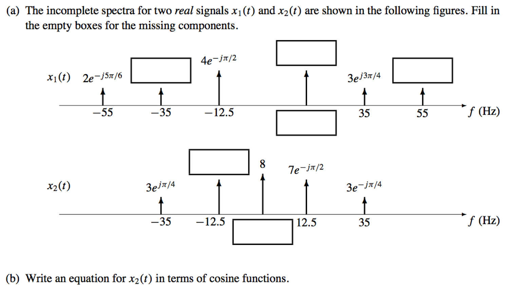
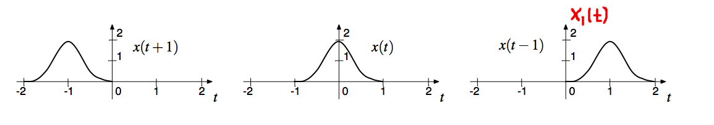

\( \def\df{\triangleq} \def\E{\mathrm{e}} \def\J{\mathrm{j}} \def\upi{π} \def\Exp{{\rm E}\,} \DeclareMathOperator{\Pr}{Pr} \DeclareMathOperator{\Realpart}{Re} \def\td{\text{d}} \)
Add \[ z_1 = \cos( 77 \upi t ) \] and \[ z_2 = \sqrt{3} \cos( 77 \upi t + 0.5 \upi). \]

